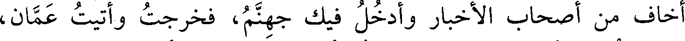
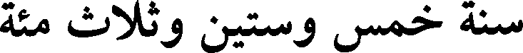
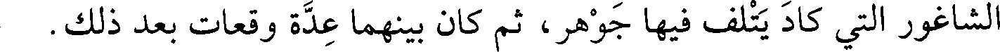
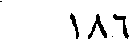
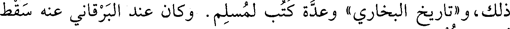
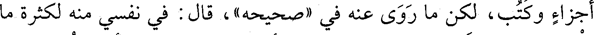

File: 000532.gt.txt (if the image is defective, simply delete all Arabic text and the line will be excluded)

الصحابة، فأخذت إلى الوالي فقال: يا هذا، اذهب ولا تقم ببلدي، فإني
File: 000533.gt.txt (if the image is defective, simply delete all Arabic text and the line will be excluded)

أخاف من أصحاب الأخبار وأدخل فيك جهنم، فخرجت وأتيت عمان،
File: 000534.gt.txt (if the image is defective, simply delete all Arabic text and the line will be excluded)

فاكتريت مع عرب إلى الكوفة، فأتيت واسط، فوجدت بنتي تبكي علي،
File: 000535.gt.txt (if the image is defective, simply delete all Arabic text and the line will be excluded)

وأنا كل سنة أحج وأسأل عن القدس لعل تزول دولتهم، فرأيته طلق اللسان
File: 000536.gt.txt (if the image is defective, simply delete all Arabic text and the line will be excluded)

ألثغ.
File: 000537.gt.txt (if the image is defective, simply delete all Arabic text and the line will be excluded)

وفي المحرم ولي إمرة دمشق بدر الشمولي الكافوري، ولي نحوا من
File: 000538.gt.txt (if the image is defective, simply delete all Arabic text and the line will be excluded)

شهرين من قبل أبي محمود الكتامي نائب الشام للمعز، ثم عزل بأبي الثريا
File: 000539.gt.txt (if the image is defective, simply delete all Arabic text and the line will be excluded)

الكردي، ثم ولي دمشق ريان الخادم المعزي، ثم عزل أيضا بعد أيام
File: 000540.gt.txt (if the image is defective, simply delete all Arabic text and the line will be excluded)
بسبكتكين التركي.
File: 000541.gt.txt (if the image is defective, simply delete all Arabic text and the line will be excluded)

سنة خمس وستين وثلاث مئة
File: 000542.gt.txt (if the image is defective, simply delete all Arabic text and the line will be excluded)

فيها كتب ركن الدولة أبو علي بن بويه إلى ولده عضد الدولة أبي
File: 000543.gt.txt (if the image is defective, simply delete all Arabic text and the line will be excluded)

شجاع أنه قد كبرت سنه وأنه يؤثر مشاهدته، فاجتمعا، فقسم ركن الدولة
File: 000544.gt.txt (if the image is defective, simply delete all Arabic text and the line will be excluded)

الممالك بين أولاده فجعل لعضد الدولة فارس وكرمان، ولمؤيد الدولة
File: 000545.gt.txt (if the image is defective, simply delete all Arabic text and the line will be excluded)

الري وأصبهان، ولفخر الدولة همذان والدينور، وجعل ولده أبا العباس في
File: 000546.gt.txt (if the image is defective, simply delete all Arabic text and the line will be excluded)

كنف عضد الدولة.
File: 000547.gt.txt (if the image is defective, simply delete all Arabic text and the line will be excluded)

وفي رجب عمل مجلس الحكم في دار السلطان عز الدولة، وجلس
File: 000548.gt.txt (if the image is defective, simply delete all Arabic text and the line will be excluded)

ابن معروف وحكم، لأن عز الدولة التمس ذلك ليشاهد مجلس حكمه كيف
File: 000549.gt.txt (if the image is defective, simply delete all Arabic text and the line will be excluded)

وفيها وفي التي تليها كانت الحرب تستعر بين هفتكين وبين جوهر
File: 000550.gt.txt (if the image is defective, simply delete all Arabic text and the line will be excluded)

المعزي بأعمال دمشق، وعدة الوقائع بينهما اثنتا عشرة وقعة، منها وقعة
File: 000551.gt.txt (if the image is defective, simply delete all Arabic text and the line will be excluded)

الشاغور التي كاد يتلف فيها جوهر، ثم كان بينهما عدة وقعات بعد ذلك.
File: 000552.gt.txt (if the image is defective, simply delete all Arabic text and the line will be excluded)

186
File: 000553.gt.txt (if the image is defective, simply delete all Arabic text and the line will be excluded)

قلت: روى عنه الحاكم، وأبو الحسن بن رزقويه، وأبو الفتح بن أبي
File: 000554.gt.txt (if the image is defective, simply delete all Arabic text and the line will be excluded)

الفوارس، وأبو بكر البرقاني، وأبو علي بن شاذان، وأبو نعيم، وآخر من
File: 000555.gt.txt (if the image is defective, simply delete all Arabic text and the line will be excluded)

روى عنه أبو طالب بن غيلان.
File: 000556.gt.txt (if the image is defective, simply delete all Arabic text and the line will be excluded)

قال الخطيب(1) : كان ثقة ثبتا مكثرا مواصلا للحج، انتخب عليه
File: 000557.gt.txt (if the image is defective, simply delete all Arabic text and the line will be excluded)

الدارقطني، وكتب الناس عنه علما كثيرا مثل «تاريخ السراج» وغير
File: 000558.gt.txt (if the image is defective, simply delete all Arabic text and the line will be excluded)

ذلك، و«تاريخ البخاري» وعدة كتب لمسلم. وكان عند البرقاني عنه سقط
File: 000559.gt.txt (if the image is defective, simply delete all Arabic text and the line will be excluded)

أجزاء وكتب، لكن ما روي عنه في «صحيحه» ، قال: في نفسي منه لكثرة ما
File: 000560.gt.txt (if the image is defective, simply delete all Arabic text and the line will be excluded)

يغرب. ثم إنه قواه، وقال: عندي عنه أحاديث عالية كنت أخرجتها نازلة،
File: 000561.gt.txt (if the image is defective, simply delete all Arabic text and the line will be excluded)

إلا أني لا أقدر على إخراجها لكبر السن.
File: 000562.gt.txt (if the image is defective, simply delete all Arabic text and the line will be excluded)

قال الخطيب(2) : وحدثنا الحسين بن شيطا، قال: سمعت أبا إسحاق
File: 000563.gt.txt (if the image is defective, simply delete all Arabic text and the line will be excluded)

المزكي يقول: أنفقت على الحديث بدرا من الدنانير، وقدمت بغداد سنة
File: 000564.gt.txt (if the image is defective, simply delete all Arabic text and the line will be excluded)

ست عشرة ومعي بخمسين ألف درهم بضاعة، ورجعت إلى نيسابور ومعي
File: 000565.gt.txt (if the image is defective, simply delete all Arabic text and the line will be excluded)

أقل من ثلثها، أنفقت ما ذهب على أهل الحديث.
File: 000566.gt.txt (if the image is defective, simply delete all Arabic text and the line will be excluded)

توفي في شعبان، وقد خرج من بغداد، فنقل إلى نيسابور، وعاش
File: 000567.gt.txt (if the image is defective, simply delete all Arabic text and the line will be excluded)

سبعا وستين سنة. وهو والد علي، ويحيى، ومحمد، وعبد الرحمن، وقد
File: 000568.gt.txt (if the image is defective, simply delete all Arabic text and the line will be excluded)

رووا الحديث.
File: 000569.gt.txt (if the image is defective, simply delete all Arabic text and the line will be excluded)

34 - إسماعيل بن عبدالله بن محمد بن ميكال، الأديب أبو
File: 000570.gt.txt (if the image is defective, simply delete all Arabic text and the line will be excluded)

العباس شيخ خراسان ووجهها وعينها، من ولد يزدجرد بن بهرام جور
File: 000571.gt.txt (if the image is defective, simply delete all Arabic text and the line will be excluded)

ملك الفرس.
File: 000572.gt.txt (if the image is defective, simply delete all Arabic text and the line will be excluded)

استعمل المقتدر أباه على الأهواز، فاستدعى أبا بكر بن دريد لتأديب
File: 000573.gt.txt (if the image is defective, simply delete all Arabic text and the line will be excluded)

إسماعيل.
File: 000574.gt.txt (if the image is defective, simply delete all Arabic text and the line will be excluded)

وفيه وفي أبيه يقول ابن دريد مقصورته التي يقول فيها:
File: 000575.gt.txt (if the image is defective, simply delete all Arabic text and the line will be excluded)

إن ابـن ميكـال الأميـر انتـاشنـي من بعد ما قد كنت كالشيء اللقى
File: 000576.gt.txt (if the image is defective, simply delete all Arabic text and the line will be excluded)

ومـد ضبعـي أبـو العبـاس مـن بعد انقباض الذرع والباع الوزى
File: 000577.gt.txt (if the image is defective, simply delete all Arabic text and the line will be excluded)

201
File: 000578.gt.txt (if the image is defective, simply delete all Arabic text and the line will be excluded)

119 - عبدالرحمن بن محمد بن إدريس بن كامل، أبو محمد
File: 000579.gt.txt (if the image is defective, simply delete all Arabic text and the line will be excluded)

القهندزي.
File: 000580.gt.txt (if the image is defective, simply delete all Arabic text and the line will be excluded)

شيخ كبير، سمع عثمان بن سعيد الدارمي، وأبا مسلم الكجي،
File: 000581.gt.txt (if the image is defective, simply delete all Arabic text and the line will be excluded)

ويوسف القاضي. وعنه أبو أحمد المعلم، وأبو منصور الديباجي، وأهل